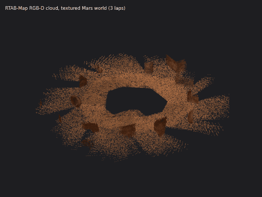

Important Deadlines (Fall 2025)
- Part A: Due Friday, November 21, 2025 @ 11:00 PM (25 points; Gradescope assignment opened Wednesday, October 29, 2025)
- Part B: Due Tuesday, December 9, 2025 @ 11:00 PM (75 points + 10 Mars Challenge bonus; opened on Gradescope Wednesday, October 29, 2025). Made optional extra credit on December 7, 2025. (original Fall 2025 figures, superseded by rubric v11 of December 8, 2025: optional extra credit with up to +35 bonus points; the two v11 builds list 175 points due Dec 15 and 75 points due Dec 10)
- Early Submission Bonus (Part A): +20 points if Part A is submitted before November 9, 2025; +10 points if Part A is submitted before November 14, 2025 (as posted in the November 2025 extra-credit guide; the first rubric v11 build (175 points) listed early-submission tiers of Gold +25 before November 7 and Silver +20 before November 9)
TA Reference Runs
TA reference runs, not student submissions
The TA recorded these runs to show what complete Assignment 4 runs look like. They are not student submissions, and no individual student results are published on this page.
Platform: NVIDIA DGX Spark (GB10, ARM64, 128 GB unified memory), ROS 2 Jazzy, Gazebo Harmonic 8.11 (gz sim), run fully headless (Xvfb virtual display, gz sim -g GUI client, ffmpeg x11grab capture). Recorded July 14, 2026.
Part 1 (Part A): Husky + UR3 setup and base drive
Clearpath Husky A200 base + UR3 arm + RH-P12-RN gripper in Gazebo Harmonic, empty world. Scripted base drive: 15 s forward at 0.4 m/s, then an 8 s in-place turn at 0.6 rad/s (video at 2x speed, cropped to the robot).
The same script also sends a UR3 joint trajectory and opens and closes the gripper twice; that motion is too small to see at this camera distance. GIF version

Part 2 (Part B): SLAM on Mars, Gazebo view
The Husky + UR3 drives away from the camera and loops among the rocks of the Mars world (mars.sdf), video at 10x speed. The drive is a scripted loop meant to revisit earlier ground: six legs of 40 s forward at 0.35 m/s, each followed by a 10.5 s turn at 0.5 rad/s (about 5.25 rad, roughly 300 degrees, per commanded turn, so the path is not a square; about 5 min in total). The SLAM log of this run records no loop closure. EKF sensor fusion and SLAM Toolbox (online async) ran alongside; Nav2 was launched but did not activate in this run.
The occupancy map is not visible in this view; the next two panels show it. GIF version (first 90 s)

Part 2 (Part B): SLAM Toolbox map growing
Occupancy grid from the same Part 2 run, rendered from the /map messages in its rosbag (179 map updates): it grows from the first scan patch to the final map (white: free space, black: obstacle edges, gray: unknown). The final map is held for 2 s at the end.

Part 2 (Part B): saved occupancy map

Final SLAM Toolbox map, saved with the Nav2 map saver (map_saver_cli) at the end of the Part 2 run: 978 x 950 cells at 0.05 m per cell, about 48.9 m x 47.5 m (white: free, black: obstacles, gray: unknown).
Mars world with the MUSt3R node (mock mode)
A second Mars-world run (mars.sdf) with SLAM Toolbox and the MUSt3R node: about 4 min of scripted exploration, video at 8x speed. The Husky + UR3 drives out among the rocks and comes back toward the camera.
The MUSt3R node ran in mock mode because PyTorch was not available on that machine, so this run produced no 3D reconstruction. Its outputs are a 2D SLAM Toolbox map and a 252.6 s rosbag. GIF version (final approach, 7x speed)

October 2026 re-runs
The TA re-ran the pipeline in October 2026 on an x86 laptop (MSI, Ubuntu 24.04, ROS 2 Jazzy, Gazebo Harmonic 8.15, software rendering on a virtual display) and ran an RTAB-Map extra-credit lane on the DGX Spark. Each caption names the machine. These are TA reference runs, not student submissions.
Part 1 (Part A): Husky + UR3 in an empty world
Gazebo view of the Part 1 demo sequence: the base drives forward and then rotates in place on /cmd_vel (about 0-6 s and 6-10 s of the video), then the UR3 moves to two poses while the gripper closes and opens. Recorded October 9, 2026 on the MSI laptop (x86_64, RTX 5080 GPU; Gazebo rendered in software).
Part 2 (Part B): Mars waypoints, Gazebo + RViz
Left: Gazebo. Right: the SLAM Toolbox map in RViz with the robot's path. A custom A* + DWA planner drives 13 goals and then part of a second lap: 15/15 waypoints reached, Gazebo ground-truth error mean 0.256 m (max 0.395 m), 387.3 s rosbag. Video at 4x speed. Recorded October 9, 2026 on the MSI laptop.
This run used a Mars world built for the re-run (Mars gravity, rocks and blocks), not mars_thanksgiving.world, and did not use Nav2.
Extra credit: RTAB-Map RGB-D SLAM with loop closures
RViz during the RTAB-Map mapping run: three laps of an 8-point loop (75.16 m driven). Blue: the RTAB-Map pose graph. Red points: RTAB-Map's grid-obstacle cloud. 64 revisit loop closures; trajectory error against Gazebo ground truth 0.271 m RMSE versus 0.725 m for wheel odometry. Video at 8x speed (first 250 s of the session). Recorded October 9, 2026 on the DGX Spark (GB10, ARM64).
The run used a textured copy of the Mars world (same rocks and gravity, with regolith textures), because the assignment worlds are almost textureless.
Extra credit: RTAB-Map 3D point cloud


Orbit around the RGB point cloud exported from the same RTAB-Map run (425,593 points, 3 cm voxels). Recorded October 9, 2026 on the DGX Spark (GB10, ARM64).
Key numbers
| Run | What ran | Key numbers |
|---|---|---|
| Part 1 (Part A) | Husky A200 + UR3 + RH-P12-RN gripper, empty world | All 4 controllers (joint_state_broadcaster, diff_drive_controller, arm_controller, gripper_controller) reported active about 11 s after the run script started waiting for them. Rosbag from an earlier take made with an earlier revision of the demo script (it sent base commands on /diff_drive_controller/cmd_vel_unstamped and its video shows no base motion): 114.25 s, 691,975 messages. |
| Part 2 (Part B) | Mars world; EKF sensor fusion + SLAM Toolbox (online async); the base followed a scripted six-leg loop on /platform/cmd_vel (no loop closure was logged). The custom A*/DWA planner node started but did not drive the robot, and Nav2's lifecycle manager crashed at startup, so the Nav2 servers never activated (only the Nav2 map saver was used). |
Rosbag 354.3 s, 784,147 messages (179 /map updates, 10,369 /scan messages). Occupancy map saved at 0.05 m per cell. |
| Mars + MUSt3R | Mars world; SLAM Toolbox + MUSt3R node (mock mode) | Rosbag 252.6 s; 2D SLAM Toolbox map saved; no 3D reconstruction. |
Commands used in these runs
These are the launch commands from the TA run scripts, with long lines wrapped and absolute paths shortened to the TA workspace ($HOME/assignment4_ws) on the DGX Spark; before the Part 2 launch, the Part 2 script adds the workspace models/ and worlds/ folders to GZ_SIM_RESOURCE_PATH.
# Part 1 (Part A): Husky + UR3 + gripper simulation, headless server
ros2 launch husky_ur3_gazebo simulation.launch.py world:=empty.sdf \
rviz:=false headless:=true
# Part 2 (Part B): Mars world, SLAM Toolbox, Nav2 (launched, but it did not activate in this run), map saver
ros2 launch husky_ur3_gazebo simulation.launch.py world:=mars.sdf \
rviz:=false headless:=true
ros2 launch slam_toolbox online_async_launch.py use_sim_time:=true \
slam_params_file:=$HOME/assignment4_ws/src/husky_ur3_manipulation/config/slam_params.yaml
ros2 launch nav2_bringup navigation_launch.py use_sim_time:=true
ros2 run nav2_map_server map_saver_cli \
-f ~/assignment4_ws/deliverables_20260714/part2/part2_slam_map_20260714_053801 \
--ros-args -p save_map_timeout:=10.0 -p use_sim_time:=true
husky_ur3_gazebo, husky_ur3_description, the mars.sdf world and the custom ekf_sensor_fusion and path_planner nodes (package husky_ur3_manipulation) come from the TA's ROS 2 Jazzy workspaces, a port of the course simulator. The public course fork, kulbir-ahluwalia/husky_ur3_simulator, is the ROS 1 Noetic version (branch noetic-devel): its packages are catkin packages with ROS 1 launch files, so the ROS 2 commands above do not run from it.
Quick Start
Fall 2025 quick start in 3 steps:
🌌 Mission Overview
Assignment 4 (Fall 2025) combined mobile navigation with manipulation in Mars-themed Gazebo worlds.
🤖 Robot Configuration
- Base: Clearpath Husky (4-wheel differential drive)
- Arm: UR3 6-DOF manipulator
- Gripper: Robotis gripper for sample collection
- Sensors:
- RGB-D camera for visual SLAM
- LiDAR for terrain mapping
- IMU for orientation in low gravity
- SLAM: RTAB-Map or custom implementation
🔴 Mars Environment Features
- Mars gravity: about 38% of Earth's (3.71 m/s² in the repo world)
- Obstacles: rock-like blocks for navigation and SLAM
The Fall 2025 handout also listed dust storms, uneven terrain and NASA rover data. None of these are in the linked worlds.
🎯 Learning Objectives
Mobile Navigation
- Autonomous path planning
- Obstacle avoidance
- SLAM in unknown terrain
- Navigate through crater fields
Manipulation Skills
- MoveIt2 motion planning
- Pick and place operations
- Visual servoing
- Sample collection
System Integration
- ROS2 architecture design
- Sensor fusion techniques
- Real-time control systems
- Performance optimization
🪐 Mars Gazebo Worlds
Available Mars Environments
🏔️ Mars Terrain (Husky + UR3)
Mars-themed Gazebo Harmonic world (flat ground with rock-like obstacles) for the Husky+UR3 mobile manipulator.
TA reference setup (not public)husky_ur3_gazebo and mars.sdf come from the TA's ROS 2 Jazzy workspace, which is not public; the public husky_ur3_simulator is the ROS 1 Noetic version.
ros2 launch husky_ur3_gazebo simulation.launch.py world:=mars.sdf
🏜️ Dual-Robot Mapping
Mapping launch from the Mars worlds + dual-robot SLAM explorer repo (Gazebo Classic via gazebo_ros). Not recommended in the final rubric (v11): reported missing mesh paths; use the Mars Thanksgiving World instead. The repo is a fork of itsyashk/ros2-dual-robot-slam-explorer.
ros2 launch mars_robots mapping.launch.py
🏕️ Dual-Robot Navigation
Navigation launch from the Mars worlds + dual-robot SLAM explorer repo (Gazebo Classic via gazebo_ros). Not recommended in the final rubric (v11): reported missing mesh paths; use the Mars Thanksgiving World instead. The repo is a fork of itsyashk/ros2-dual-robot-slam-explorer.
ros2 launch mars_robots navigation.launch.py
Installing Mars Terrain Packages
# Clone the Mars worlds + dual-robot SLAM explorer repository
# (fork of itsyashk/ros2-dual-robot-slam-explorer; rubric v11 marks it not recommended
# because of missing mesh paths - use the Mars Thanksgiving World instead)
cd ~/ros2_ws/src
git clone https://github.com/kulbir-ahluwalia/ros2-dual-robot-slam-explorer.git
# GazeboMarsRover2 is a ROS 1 (catkin) package: colcon under ROS 2 does not build it
git clone https://github.com/LRCJ/GazeboMarsRover2.git
# Install dependencies
sudo apt-get update
sudo apt install ros-${ROS_DISTRO}-ros-gz
# Build the workspace
cd ~/ros2_ws
colcon build
source install/setup.bash
Custom World Configuration
Create your own Mars exploration scenario by modifying world files:
Fall 2025 handout text (not a runnable example)The models this world includes (mars_sky, jezero_crater_terrain, mars_rock_sample) are not in any of the repositories linked on this page.
<?xml version="1.0"?>
<sdf version="1.6">
<world name="mars_exploration">
<!-- Mars sky and lighting -->
<include>
<uri>model://mars_sky</uri>
</include>
<!-- Jezero Crater terrain -->
<include>
<uri>model://jezero_crater_terrain</uri>
<pose>0 0 0 0 0 0</pose>
</include>
<!-- Add rock samples for collection -->
<include>
<uri>model://mars_rock_sample</uri>
<pose>5 5 0.5 0 0 0</pose>
<name>sample_01</name>
</include>
</world>
</sdf>
🛠️ Complete Setup & Installation
Prerequisites
- Ubuntu 22.04 + ROS 2 Humble + Gazebo Fortress, or Ubuntu 24.04 + ROS 2 Jazzy + Gazebo Harmonic (TA reference implementation)
- NVIDIA GPU recommended (GTX 1060 or better)
- 16GB RAM minimum
Step 1: Environment Setup
Configure ROS2 Jazzy/Humble with Gazebo Harmonic
source /opt/ros/jazzy/setup.bash
mkdir -p ~/assignment4_ws/src && cd ~/assignment4_ws
Step 2: Clone Repositories
Get Husky UR3 simulator and Mars worlds
cd ~/assignment4_ws/src
git clone https://github.com/kulbir-ahluwalia/husky_ur3_simulator.git
# optional, not recommended in rubric v11 (missing meshes; fork of itsyashk/ros2-dual-robot-slam-explorer)
git clone https://github.com/kulbir-ahluwalia/ros2-dual-robot-slam-explorer.git
husky_ur3_simulator is the ROS 1 Noetic reference (branch noetic-devel): it holds catkin packages with ROS 1 launch files, not ROS 2 packages. The ROS 2 Jazzy setup used for the TA runs, including the launch commands in Step 5, is described in the TA reference runs section.
Step 3: Install Dependencies
Install required ROS2 packages
cd ~/assignment4_ws
sudo rosdep init 2>/dev/null || true
rosdep update
rosdep install --from-paths src --ignore-src -r -y
pip3 install transforms3d
Step 4: Build Workspace
Compile all packages
colcon build
source install/setup.bash
Step 5: Launch Mars Environment
Start the complete simulation
TA reference setup (not public)husky_ur3_gazebo and mars.sdf come from the TA's ROS 2 Jazzy workspace, which is not public; the public husky_ur3_simulator is the ROS 1 Noetic version.
# Launch Mars world with Husky robot
ros2 launch husky_ur3_gazebo simulation.launch.py world:=mars.sdf
# In a new terminal, launch SLAM
ros2 launch slam_toolbox online_async_launch.py use_sim_time:=true
# Start teleoperation (optional)
ros2 run teleop_twist_keyboard teleop_twist_keyboard
🎮 Controller Configuration
Make sure your controllers.yaml includes the command_interface parameter:
base_controller:
ros__parameters:
type: diff_drive_controller/DiffDriveController
command_interface: "velocity" # Critical for movement!
left_wheel_names: ["front_left_wheel", "rear_left_wheel"]
right_wheel_names: ["front_right_wheel", "rear_right_wheel"]
🎯 SLAM Tasks & Requirements
Assignment 4 Part B: Mars SLAM Challenge (75 points)
Part B covered sensor fusion (EKF), path planning with obstacle avoidance, 2D SLAM, full-system integration, and a technical report. The Fall 2025 pages listed two different per-item point splits for this part and no rubric file from that time survives, so only the Gradescope total is given here.
Total: 75 points (Gradescope), plus the Mars Challenge bonus (+10 points) below. (original Fall 2025 figures, superseded by rubric v11 of December 8, 2025: optional extra credit with up to +35 bonus points; the two v11 builds list 175 points due Dec 15 and 75 points due Dec 10)
🌟 Bonus Challenge: Mars Dust Storm (10 extra points)
Complete SLAM during a simulated Mars dust storm with reduced visibility!
Fall 2025 handout text (not a runnable command)# Enable dust storm mode
ros2 param set /mars_environment enable_dust_storm true
ros2 param set /mars_environment dust_density 0.7
Fall 2025 handout command (no /mars_environment node exists in the linked repositories). TA reference run, DGX Spark ARM64, October 9, 2026: the same route driven in a clear and a dust-storm Mars world (particle emitters plus simulated lidar and camera degradation) gave a SLAM Toolbox trajectory error of 0.060 m RMSE (clear) versus 0.636 m (storm), with 0 versus 8.37 m² of phantom obstacles.
📊 Performance Metrics
| Metric | Earth Performance | Mars Challenge | Points |
|---|---|---|---|
| Map Completeness | >95% | >90% in Mars terrain | 15 |
| Localization Error | <10cm | <20cm with reduced traction | 10 |
| Loop Closure Success | 100% | >80% in dust conditions | 10 |
| Sample Collection | N/A | 5+ Mars rocks collected | 15 |
Part B is graded out of 75 points (rubric above); the Points column in this table is not additional to that total.
📁 Submission Requirements
- Rosbag Recording: 5-minute Mars exploration (include /tf, /map, /odom)
- Generated Maps: 2D occupancy grid + 3D pointcloud of Mars terrain
- Video Demo: Screen recording showing SLAM in action (3-5 minutes)
- Technical Report: 3-page analysis of SLAM performance on Mars
- Code: Your SLAM implementation or configuration files
🎯 Pro Tips for Success
- Start with flat Mars terrain before attempting craters
- Use higher loop closure thresholds for dusty conditions
- Implement sensor fusion early to handle wheel slip
- Test in Earth gravity first, then switch to Mars
- Save intermediate maps in case of crashes
🚨 Troubleshooting Guide
Solution: Add
command_interface: "velocity" to your controllers.yaml file
base_controller:
ros__parameters:
command_interface: "velocity" # Add this line!
Solution: Set software rendering mode
export LIBGL_ALWAYS_SOFTWARE=1
export MESA_GL_VERSION_OVERRIDE=3.3
ros2 launch husky_ur3_gazebo simulation.launch.py
Solution: Adjust wheel odometry covariance and use IMU fusion
# Increase odometry uncertainty
ros2 param set /husky_controller odom_covariance_xy 0.1
ros2 param set /ekf_filter imu_weight 0.8
Solution: Adjust PID gains for Mars gravity
# Mars gravity compensation
ros2 param set /ur3_controller gravity_compensation 3.71
ros2 param set /ur3_controller pid_p 0.6
Solution: Tune visual feature detectors for Mars. We did not verify whether RTAB-Map picks up
Vis/* changes made at runtime with ros2 param set, so the safe route is to pass them as launch arguments and restart the node:
# Pass RTAB-Map Vis/* parameters at launch (args is the rtabmap_launch argument for RTAB-Map parameters):
# fewer inliers needed (default 20), GFTT/BRIEF features (type 6), up to 2000 features (default 1000).
# Append your camera remaps (rgb_topic:=, depth_topic:=, camera_info_topic:=) and use_sim_time:=true,
# and restart the node after any change.
ros2 launch rtabmap_launch rtabmap.launch.py args:="--Vis/MinInliers 10 --Vis/FeatureType 6 --Vis/MaxFeatures 2000"
Solution: Increase timeout in launch files
# In your launch file, increase timeout
transform_timeout = 5.0 # Increase from default 1.0
📚 Resources & Demo Materials
📹 TA Reference Run Videos
TA reference runs, not student submissions. They are at the top of this page.
🎮 Gripper Control Commands
Open Gripper
ros2 topic pub --once /gripper_controller/commands std_msgs/msg/Float64MultiArray "{data: [0.0]}"
Close Gripper
ros2 topic pub --once /gripper_controller/commands std_msgs/msg/Float64MultiArray "{data: [1.0]}"
Values used in the TA reference runs (RH-P12-RN gripper): 0.0 open, 1.0 closed.
🔧 Useful Scripts
GPU Test Script
Check if GPU acceleration is working
glxinfo | grep "OpenGL renderer"
Controller Check
Verify controllers are loaded
ros2 control list_controllers
🚀 NASA Mars Data
🔗 GitHub Repositories
- Husky UR3 Simulator (course fork, ROS 1 Noetic)
- Mars worlds + dual-robot SLAM explorer (fork of itsyashk/ros2-dual-robot-slam-explorer; not recommended in rubric v11, missing meshes)
- Mars Rover Models
🏆 Student Mars Mission Showcase
Fall 2025 showcase (archive)
During Fall 2025, students were invited to record a 2-minute highlight video of their best Mars navigation, including the autonomous sample collection sequence, and to submit it through Gradescope with the hashtag #MarsCS498GC.
Individual student submissions and results are not published on this page. To see what complete runs look like, watch the TA reference runs at the top of this page (TA reference runs, not student submissions).
🚀 Challenge Yourself!
Beginner Challenges
- Navigate to 3 waypoints autonomously
- Pick up and place a single rock sample
- Create a 2D map of the crater
- Complete basic teleoperation course
Advanced Challenges
- Implement visual SLAM with loop closure
- Autonomous sample sorting by size
- Multi-robot coordination demo
- Navigate during dust storm conditions
🚀 Student Testimonial
"I couldn't sleep last night because I was so excited SLAMing on MARS!!" - a CS498GC student
Fall 2025 archive.
CS498GC Mobile Robotics | Fall 2025 | University of Illinois at Urbana-Champaign
Professor Girish Chowdhary | TA: Kulbir Singh Ahluwalia